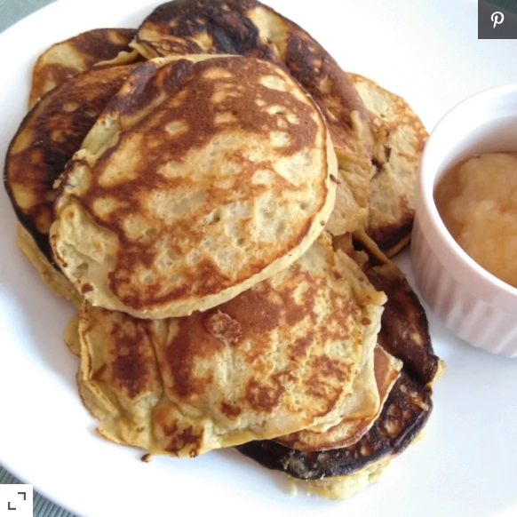

Pancakes

Los pancakes son alimentos rapidos y sencillos de preparar para una alimentacion o desayuno placentero
Ingredientes
- 1 banana en pure
- 3 huevos
- 1/4 de arina de almendras
- 1 cuchara de mantequilla de almendras
- 1 cuchara de extracto de vainilla
- media cuchara de canela
- 1/8 de soda para cocinar
- 1/8 de arina de cocina
- 1 cuchara de aceite de oliva
Instrucciones
- Mezclar el pure de banana , los huevos , la mantequilla de almendras , el extracto de vainilla , la soda de cocina , la arina de cocina en un embase hasta que se mezcle todo
- Pones aceite en el sarte a fuego medio y poner cucharas largas de la mezlca , cocer hasta que el centro y los bordes esten cecos o cocidos luego voltearlos , repetir esto con cada ronda